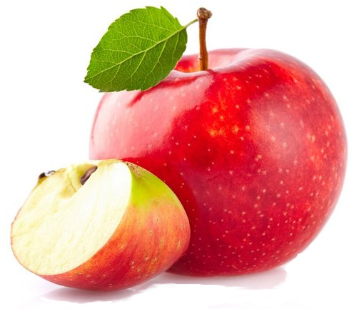

Bienvenue sur la page des pommes
La pomme est un fruit comestible à pépins d'un goût sucré et acidulé et à la propriété plus ou moins astringente selon les variétés. D'un point de vue botanique, il s'agit d'un fruit complexe. Elle est produite par les pommiers, des arbres du genre Malus. En France, c'est le plus consommé des fruits cultivés et le troisième dans le monde.
Les principaux types de pommes sont tous issus du pommier domestique ou pommier commun, de l'espèce Malus domestica, qui compte environ 20 000 variétés et cultivars à travers le monde. D'une forme trapue caractéristique parfois quasi sphérique, elle se consomme à maturité crue, cuite ou séchée. Son jus est bu tel quel ou pasteurisé ; fermenté, il donne le cidre.
Associée au fruit défendu dans les représentations du Livre de la Genèse, elle symbolise souvent en Occident le péché originel.
Histoire
La pomme que nous consommons aujourd'hui est une descendante de l'espèce Malus sieversii consommée par l'homme depuis le Néolithique sur les plateaux d'Asie centrale, dans la région des montagnes du Tian Shan (la région d'Almaty au Kazakhstan en revendique l'origine). Il y a 3 000 ans, elle était déjà consommée par les Chinois. Elle arriva par la route de la soie chez les Arabes, les Grecs et les Romains. Pline l'Ancien en répertoriera plus tard environ cent variétés. Aujourd'hui, il existerait plus de 20 000 variétés (voir Liste des variétés de pommes), dont 7 000 sont cultivées à travers le monde.
Au Moyen Âge, les monastères et les couvents ont joué un rôle important dans le développement de sa culture.
Jadis, on utilisait les vertus thérapeutiques de la pomme qui entrait dans la confection d'onguents (ainsi le mot « pommade » vient-il du mot « pomme »).
Dans le calendrier républicain français, le jour de la pomme était généralement le 22 octobre, premier jour du mois de brumaire. Pomme est donc aussi un prénom révolutionnaire. Après la Révolution, il n’est plus utilisé jusqu’en 1979, année durant laquelle il est donné à cinq filles. Il est attribué depuis trois à sept fois par an. Il se fête le 22 octobre (1er brumaire).